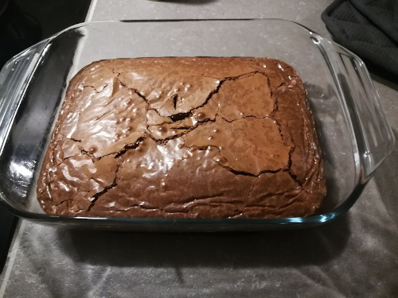

Homemade Chocolate Brownie, extra T H I C C and best consumed with vanilla icecream
Ingredients:
- 500g of Dark Chocolate
- 300g of Salted Butter
- 200g of Sugar
- 180g of Flour
- 6 whole Eggs
Steps
- Preheat the oven to 200°
- Break up your Chocolate and Butter into small chunks and melt them together in a Bain-Marie
- While your Chocolate and Butter are melting,in a big cooking bowl, mix your Eggs and Sugar together
- Once the Chocolate and the Butter has melted, allow them to cooldown before adding them to the Sugar/Eggs mixture as not to cook the Eggs
- Add the Chocolate/Butter to the Eggs/Sugar and mix them together, once it is homogeneous, add the Flour
- use a little notch of butter to butter the Plate before pouring the mixture in
- Put the plate into the Oven until you see that the middle has risen, you can use a knife to poke a hole into it to check how moist the inside is
- And Voila ! Your brownie is done !